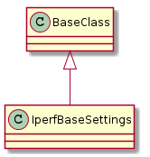
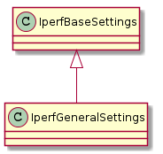
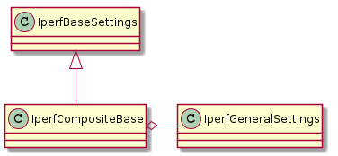
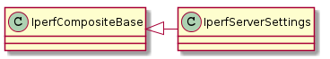
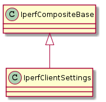

The two classes that are meant to be used directly are the Iperf Server Settings and the Iperf Client Settings, the other classes are support for those two classes. There are three ways to set their parameters:
- pass them in to the constructor
- set them (e.g. config.interval = 1)
- pass in a dictionary of attribute-name:value pairs to the update method
My original thinking was that the constructor would be the main way to set things up and then updates and changes could be made by assigning to the attributes, but once I started trying to integrate it and set the classes up using ConfigParser I realised that it would be difficult so the update method is intended to be the main way to set up the configurations.
Once the configuration is set up, the intended way to use it is by casting it to a string. If you have a paramiko-like connection to each host you could do something like:
# I'll show all three ways to set the properties
# in practice it might not make sense to use all of them
server = IperfServerSettings(daemon=True)
client = IperfClientSettings()
client.update({'interval':1, 'time':60, 'parallel':4})
client.server = '192.168.20.103'
serverin, serverout, servererr = dut.exec_command('iperf {0}'.format(server))
clientin, clientout, clienterror = target.exec_command('iperf {0}'.format(client))
for line in clientout:
print clientout
A place for common constants.
This is the base class for all the settings.

| IperfBaseSettings | |
| IperfBaseSettings.set_boolean | |
| IperfBaseSettings.set_number | |
| IperfBaseSettings.set_bytes |
The constants are exploding so I’ll start breaking them apart instead of using the one IperfConstants class.
This is to hold the settings common to both the client and server (See the General Options section in the iperf man page).

| IperfGeneralSettings | |
| IperfGeneralSettings.format | |
| IperfGeneralSettings.interval | |
| IperfGeneralSettings.len | |
| IperfGeneralSettings.print_mss | |
| IperfGeneralSettings.output | |
| IperfGeneralSettings.port | |
| IperfGeneralSettings.udp | |
| IperfGeneralSettings.window | |
| IperfGeneralSettings.compatibility | |
| IperfGeneralSettings.mss | |
| IperfGeneralSettings.nodelay | |
| IperfGeneralSettings.version | |
| IperfGeneralSettings.IPv6Version | |
| IperfGeneralSettings.reportexclude | |
| IperfGeneralSettings.reportstyle | |
| IperfGeneralSettings.update |
A base-class for the client and server settings specifically.

| IperfCompositeBase | |
| IperfCompositeBase.prefix | |
| IperfCompositeBase.set | |
| IperfCompositeBase.get | |
| IperfCompositeBase.update | |
| IperfCompositeBase.__str__ |
The server-side settings – see Server Specific Options in the iperf man page.

| IperfServerSettings | |
| IperfServerSettings.prefix | |
| IperfServerSettings.daemon | |
| IperfServerSettings.single_udp |
Constants for the client (mostly to try and get rid of my spelling errors).
class IperfClientConstants(object):
"""
Constants for the IperfClientSettings
"""
__slots__ = ()
options = ('udp', 'bandwidth', 'dualtest', 'num', 'tradeoff', 'time', 'fileinput',
'stdin', 'listenport', 'parallel', 'ttl')
# attributes
bandwidth = '_bandwidth'
num = '_num'
tradeoff = '_tradeoff'
time = '_time'
stdin = '_stdin'
listenport = '_listenport'
parallel = '_parallel'
ttl = '_ttl'
The client-side options – see Client Specific Options in the iperf man page.

| IperfClientSettings | |
| IperfClientSettings.prefix | |
| IperfClientSettings.server | |
| IperfClientSettings.bandwidth | |
| IperfClientSettings.dualtest | |
| IperfClientSettings.num | |
| IperfClientSettings.tradeoff | |
| IperfClientSettings.time | |
| IperfClientSettings.fileinput | |
| IperfClientSettings.stdin | |
| IperfClientSettings.listenport | |
| IperfClientSettings.parallel | |
| IperfClientSettings.ttl | |
| IperfClientSettings.linux_congestion | |
| IperfClientSettings.__str__ |
To facilitate the use of ConfigObj I’m creating a master configuration specification for iperf options. I’m not splitting the lines so that it can be used as a help string as well. Use StringIO or split it before giving it to ConfigObj.
formats = 'a A b B k K m M g G'.split()
formats = ', '.join(("'{0}'".format(token) for token in formats))
reports = 'c d m s v C D M S V'.split()
reports = ', '.join(("'{0}'".format(token) for token in reports))
iperf_configspec = """
# client/server options:
format=option({formats}, default=None)
interval=check_number(min=0.5, default=None)
len=check_len(default=None)
print_mss=boolean(default=None)
output=string(default=None)
port=integer(min=1024, default=None)
udp=boolean(default=None)
window=check_window(default=None)
bind=string(default=None)
compatibility=boolean(default=None)
mss=check_window(default=None)
nodelay=boolean(default=None)
IPv6Version=boolean(default=None)
# server only
single_udp=boolean(default=None)
daemon=boolean(default=False)
# client only
bandwidth=check_bandwidth(default=None)
dualtest=boolean(default=None)
num=check_num(default=None)
tradeoff=boolean(default=None)
time=float(min=0, default=None)
fileinput=check_fileinput(default=None)
listenport=integer(min=1024, default=None)
parallel=integer(min=1, default=None)
ttl=integer(default=None)
linux-congestion=string(default=None)
# miscellaneous
reportexclude=option({reports}, default=None)
reportstyle=option('c', 'C', default=None)
""".format(formats=formats,
reports=reports)
# this is going to have to move somewhere later on
def check_search(regex, value):
"""
convenience method to check the value
:param:
- `regex`: compiled regex to search value
- `value`: string to search
:return: value if matched
:raise: VdtValueError otherwise
"""
match = regex.search(value)
if match:
return value
raise VdtValueError(value)
def check_len(value):
"""
Checks that the value is a possible buffer len value
:return: value if valid
:raise: VdtValueError otherwise
"""
return check_search(IperfConstants.byte_expression,
value)
def check_window(value):
"""
checks that the value is a reasonable window size
this will reject units that iperf accepts but
reads as bytes (like 'q')
"""
return check_search(IperfConstants.window_expression,
value)
def check_bandwidth(value):
"""
Checks that has only k, K, m or M units
"""
return check_search(IperfConstants.bandwidth_expression,
value)
def check_num(value):
"""
Checks the --num is an integer with the correct units
"""
return check_search(IperfConstants.num_expression,
value)
def check_fileinput(value):
"""
checks that the file exists
"""
if os.path.isfile(value):
return value
raise VdtValueError(value)
def check_number(value, min=None):
"""
For the case where int is preferred but float is allowed
"""
min = float(min)
try:
try:
value = int(value)
except ValueError:
value = float(value)
if value >= min:
return value
except ValueError:
pass
raise VdtValueError(value)
iperf_checks = {'check_len':check_len,
'check_window':check_window,
'check_bandwidth':check_bandwidth,
'check_num':check_num,
'check_fileinput':check_fileinput,
'check_number': check_number}
# this is only for testing until I get things up and running
def get_validator():
"""
Returns a validator loaded with extra regular expression checks
"""
return Validator(iperf_checks)